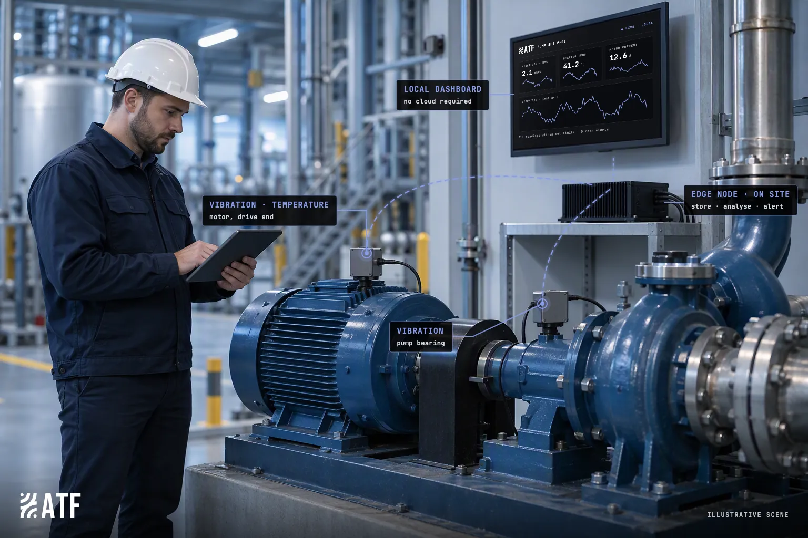
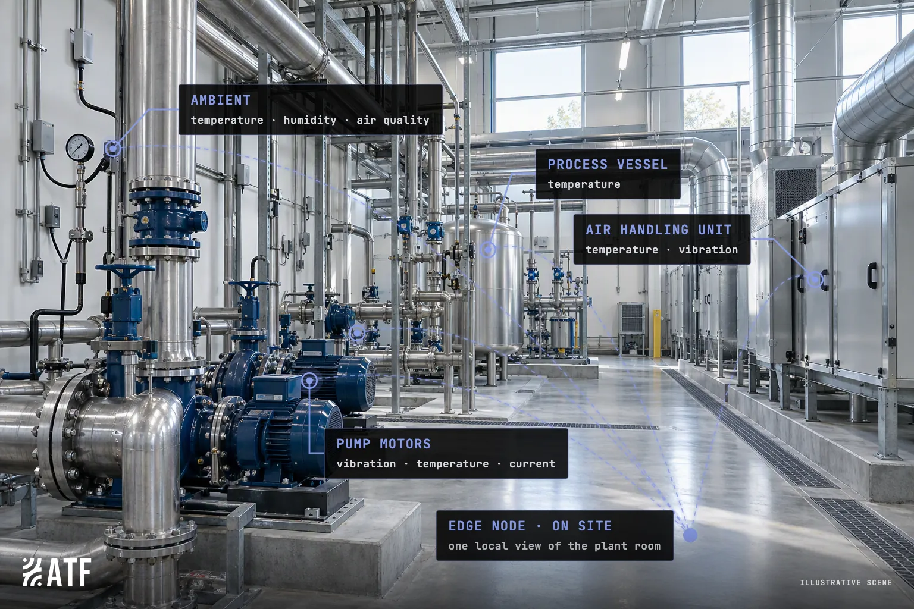
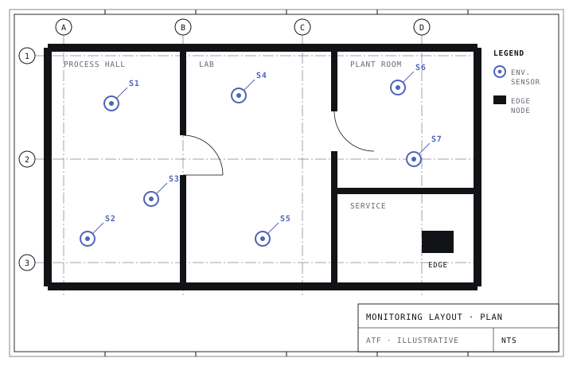
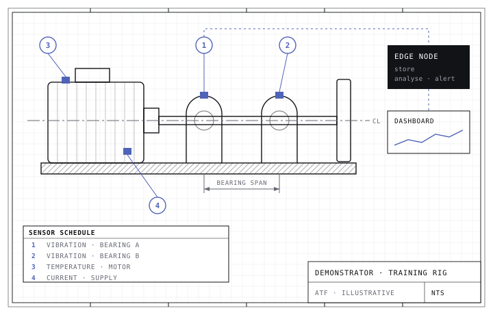
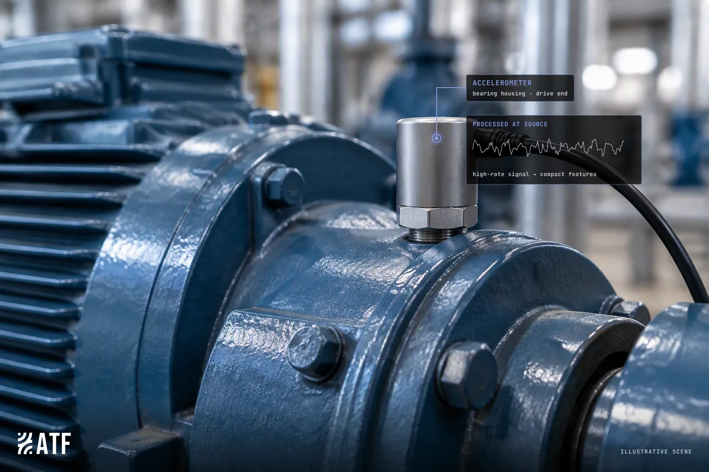
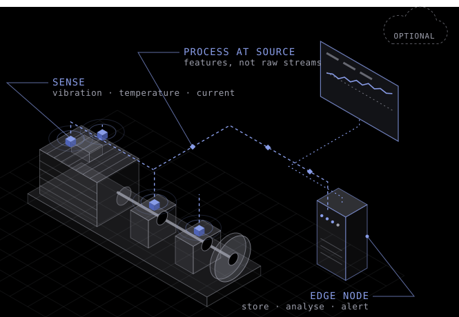
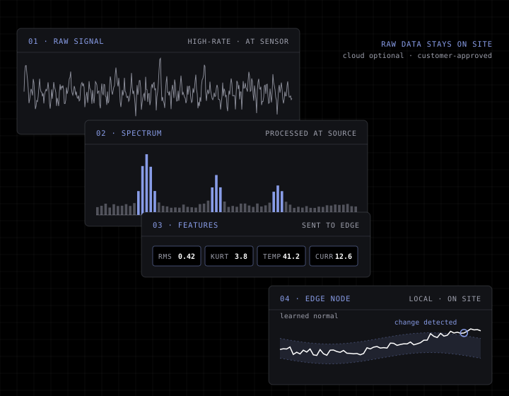

Limited visibility
Critical equipment and environmental conditions are not continuously visible.
Industrial edge intelligence for manufacturers
Deploy practical industrial sensing, resilient site connectivity and local dashboards to see what is happening across your equipment and environment. Start with visibility today and build the data foundation for predictive maintenance tomorrow.

Many manufacturers know where they want to get to: fewer unexpected failures, better maintenance decisions and more efficient operations. The challenge is obtaining reliable, contextual data without complex integration work, major infrastructure changes or surrendering control of sensitive operational information.

Critical equipment and environmental conditions are not continuously visible.
Traditional monitoring projects can require cabling, integration and specialist support.
Without a trusted data foundation, predictive maintenance remains out of reach.
Low-power sensing and industrial connectivity for environmental and operational telemetry, including temperature, humidity, air quality, vibration, motor current and other applicable inputs.
Local dashboards, trends and threshold alerts that help teams see conditions, investigate change and make better operational decisions.
A demonstrator linked to a training rig shows how condition data and machine behaviour can support anomaly detection and future predictive-maintenance workflows.
Sensing, connectivity, local monitoring, dashboards and threshold alerts.
Advanced anomaly detection and predictive insight.

At a UK government-backed manufacturing centre of excellence, ATF deployed environmental sensors across seven locations in one facility in a single day. The deployment provided real-time dashboard visibility of air-quality and environmental conditions, demonstrating edge-based monitoring in a working industrial setting.
This was a single-site demonstration deployment focused on environmental monitoring.

Our demonstrator model is linked to a training rig, showing how equipment-condition data can be captured, visualised and used to explore the next step towards predictive maintenance.
A demonstrator for condition monitoring and the route towards anomaly detection; not a customer implementation.

Collect, store and analyse data close to the asset.
High-rate signals are reduced to useful features at the sensor, so connectivity can be matched to the site, including long-range, low-power wireless where cabling is difficult.
Runs on its own sensors and edge node, with minimal dependency on existing IT and OT systems.
Cloud sync, remote support and off-site analysis are optional and subject to customer approval. What leaves the site, if anything, is your decision.
We design ATF to support human judgement, not replace it. Alerts should come with the context and reasoning behind them, so your team can check them and decide.
Each layer does its work as close to the asset as possible, so only the information people need to act has to travel.

Vibration, temperature, motor current and environmental conditions, placed where they inform the components that matter.
High-frequency signals are processed at or near the sensor, so only meaningful features need to travel across the site.
Connectivity matched to the environment: existing networks where available, long-range, low-power wireless where cabling is impractical.
An on-site edge node holds the data, runs the analytics and serves local dashboards and threshold alerts, and is designed to keep working without an internet connection.
Cloud sync, remote support and off-site analysis only when you choose to enable them.

High-rate vibration is reduced to compact features at the sensor. The edge node is designed to compare them with each machine’s learned normal behaviour, so meaningful change can be seen and raw data can stay on site.
Choose an asset, production area or environmental concern where better visibility would create value.
Install sensors and edge infrastructure with minimal disruption, then establish a baseline of normal conditions.
Use the data to improve visibility and decision-making, then prioritise the next use case for alerts, condition monitoring or predictive insight.
Our team pairs manufacturing and engineering experience with start-up and scale-up track records. We understand the shop floor as well as the boardroom.
Chairman
25+ years in tech-enabled services, with deep AI and automation expertise and a track record of investing in and building businesses from start-up to exit.
Chief Executive Officer
Chartered engineer and former MOD senior leader, experienced in delivering complex, high-growth programmes in demanding environments.
Chief Architect
Seasoned management consultant with deep expertise in large-scale digital transformation; past roles span Ericsson, EY and the European Space Agency.
Chief Operating Officer
Two decades guiding businesses such as Biomni, Unisys and DXC through SaaS, automation and AI; an expert in strategic IT solutions.
Commercial Director
Experienced industrial-engineering executive; professor at the University of Central Lancashire and Advisory Board member of the AMRC.
Chief Financial Officer
Senior business advisor and finance leader for complex, high-growth businesses; most recently CFO of a multinational manufacturer in major transformation.
Tell us about the equipment, area or environmental concern you would like to understand better, and we will discuss whether an edge-based monitoring deployment is a good fit.
Or email hello@aitechfutures.com directly, including if you would like a technical overview.